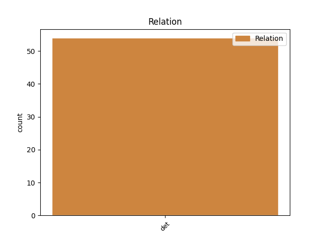
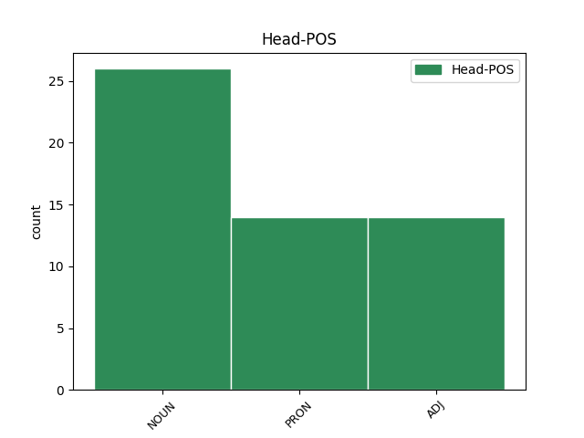
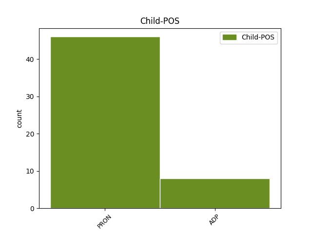

Distribution of features within this leaf



Agreement Rules sorted by frequency.
- When the dependent token is the determiner(det) of the head token, and the dependent token is PRON.
1 Orice orice PRON Pi3-sr Case=Acc,Nom|Number=Sing|Person=3|PronType=Ind 4 det _ _
2 astfel _ _ _ _ 0 _ _ _
3 de _ _ _ _ 0 _ _ _
4 funcție funcție NOUN Ncfsrn Case=Acc,Nom|Definite=Ind|Gender=Fem|Number=Sing 0 _ _ _
5 este _ _ _ _ 0 _ _ _
6 restricția _ _ _ _ 0 _ _ _
7 la _ _ _ _ 0 _ _ _
8 [ _ _ _ _ 0 _ _ _
9 - _ _ _ _ 0 _ _ _
10 pi _ _ _ _ 0 _ _ _
11 , _ _ _ _ 0 _ _ _
12 pi _ _ _ _ 0 _ _ _
13 ] _ _ _ _ 0 _ _ _
14 a _ _ _ _ 0 _ _ _
15 unei _ _ _ _ 0 _ _ _
16 funcții _ _ _ _ 0 _ _ _
17 periodice _ _ _ _ 0 _ _ _
18 cu _ _ _ _ 0 _ _ _
19 perioada _ _ _ _ 0 _ _ _
20 2pi _ _ _ _ 0 _ _ _
21 ( _ _ _ _ 0 _ _ _
22 pentru _ _ _ _ 0 _ _ _
23 care _ _ _ _ 0 _ _ _
24 am _ _ _ _ 0 _ _ _
25 păstrat _ _ _ _ 0 _ _ _
26 aceeași _ _ _ _ 0 _ _ _
27 notație _ _ _ _ 0 _ _ _
28 ) _ _ _ _ 0 _ _ _
29 . _ _ _ _ 0 _ _ _
Disagree Examples:
1 Fața _ _ _ _ 0 _ _ _
2 aceea _ _ _ _ 0 _ _ _
3 ca _ _ _ _ 0 _ _ _
4 de _ _ _ _ 0 _ _ _
5 oaie _ _ _ _ 0 _ _ _
6 de _ _ _ _ 0 _ _ _
7 pe _ _ _ _ 0 _ _ _
8 ecran _ _ _ _ 0 _ _ _
9 , _ _ _ _ 0 _ _ _
10 mulțumită _ _ _ _ 0 _ _ _
11 de _ _ _ _ 0 _ _ _
12 sine _ _ _ _ 0 _ _ _
13 , _ _ _ _ 0 _ _ _
14 și _ _ _ _ 0 _ _ _
15 sentimentul _ _ _ _ 0 _ _ _
16 terifiant _ _ _ _ 0 _ _ _
17 de _ _ _ _ 0 _ _ _
18 forță _ _ _ _ 0 _ _ _
19 pe _ _ _ _ 0 _ _ _
20 care _ _ _ _ 0 _ _ _
21 -l _ _ _ _ 0 _ _ _
22 dădea _ _ _ _ 0 _ _ _
23 armata armată NOUN Ncfsry Case=Acc,Nom|Definite=Def|Gender=Fem|Number=Sing 0 _ _ _
24 Eurasiană _ _ _ _ 0 _ _ _
25 din din ADP Spsa AdpType=Prep|Case=Acc 23 det _ _
26 spatele _ _ _ _ 0 _ _ _
27 ei _ _ _ _ 0 _ _ _
28 erau _ _ _ _ 0 _ _ _
29 prea _ _ _ _ 0 _ _ _
30 mult _ _ _ _ 0 _ _ _
31 : _ _ _ _ 0 _ _ _
32 și _ _ _ _ 0 _ _ _
33 , _ _ _ _ 0 _ _ _
34 pe _ _ _ _ 0 _ _ _
35 urmă _ _ _ _ 0 _ _ _
36 , _ _ _ _ 0 _ _ _
37 până _ _ _ _ 0 _ _ _
38 și _ _ _ _ 0 _ _ _
39 vederea _ _ _ _ 0 _ _ _
40 lui _ _ _ _ 0 _ _ _
41 Goldstein _ _ _ _ 0 _ _ _
42 sau _ _ _ _ 0 _ _ _
43 gândul _ _ _ _ 0 _ _ _
44 la _ _ _ _ 0 _ _ _
45 el _ _ _ _ 0 _ _ _
46 provocau _ _ _ _ 0 _ _ _
47 automat _ _ _ _ 0 _ _ _
48 frică _ _ _ _ 0 _ _ _
49 și _ _ _ _ 0 _ _ _
50 mânie _ _ _ _ 0 _ _ _
51 . _ _ _ _ 0 _ _ _
1 Ceea _ _ _ _ 0 _ _ _
2 ce _ _ _ _ 0 _ _ _
3 voisem _ _ _ _ 0 _ _ _
4 , _ _ _ _ 0 _ _ _
5 de _ _ _ _ 0 _ _ _
6 fapt _ _ _ _ 0 _ _ _
7 , _ _ _ _ 0 _ _ _
8 să _ _ _ _ 0 _ _ _
9 -ți _ _ _ _ 0 _ _ _
10 spun _ _ _ _ 0 _ _ _
11 , _ _ _ _ 0 _ _ _
12 era _ _ _ _ 0 _ _ _
13 că _ _ _ _ 0 _ _ _
14 în _ _ _ _ 0 _ _ _
15 articolul articol NOUN Ncmsry Case=Acc,Nom|Definite=Def|Gender=Masc|Number=Sing 0 _ _ _
16 dumitale dumneata PRON Pp2-so--------s Case=Dat,Gen|Number=Sing|Person=2|PronType=Prs|Strength=Strong 15 det _ _
17 am _ _ _ _ 0 _ _ _
18 observat _ _ _ _ 0 _ _ _
19 că _ _ _ _ 0 _ _ _
20 ai _ _ _ _ 0 _ _ _
21 folosit _ _ _ _ 0 _ _ _
22 două _ _ _ _ 0 _ _ _
23 cuvinte _ _ _ _ 0 _ _ _
24 care _ _ _ _ 0 _ _ _
25 s- _ _ _ _ 0 _ _ _
26 au _ _ _ _ 0 _ _ _
27 perimat _ _ _ _ 0 _ _ _
28 . _ _ _ _ 0 _ _ _
1 Deodată _ _ _ _ 0 _ _ _
2 , _ _ _ _ 0 _ _ _
3 cu _ _ _ _ 0 _ _ _
4 acel _ _ _ _ 0 _ _ _
5 gen _ _ _ _ 0 _ _ _
6 de _ _ _ _ 0 _ _ _
7 efort _ _ _ _ 0 _ _ _
8 cu _ _ _ _ 0 _ _ _
9 care _ _ _ _ 0 _ _ _
10 -ți _ _ _ _ 0 _ _ _
11 smulgi _ _ _ _ 0 _ _ _
12 capul _ _ _ _ 0 _ _ _
13 de _ _ _ _ 0 _ _ _
14 pe _ _ _ _ 0 _ _ _
15 pernă _ _ _ _ 0 _ _ _
16 în _ _ _ _ 0 _ _ _
17 toiul _ _ _ _ 0 _ _ _
18 unui _ _ _ _ 0 _ _ _
19 coșmar _ _ _ _ 0 _ _ _
20 , _ _ _ _ 0 _ _ _
21 Winston _ _ _ _ 0 _ _ _
22 reușise _ _ _ _ 0 _ _ _
23 să _ _ _ _ 0 _ _ _
24 -și _ _ _ _ 0 _ _ _
25 transfere _ _ _ _ 0 _ _ _
26 ura _ _ _ _ 0 _ _ _
27 de _ _ _ _ 0 _ _ _
28 la _ _ _ _ 0 _ _ _
29 omul _ _ _ _ 0 _ _ _
30 de _ _ _ _ 0 _ _ _
31 pe _ _ _ _ 0 _ _ _
32 ecran _ _ _ _ 0 _ _ _
33 la _ _ _ _ 0 _ _ _
34 fata fată NOUN Ncfsry Case=Acc,Nom|Definite=Def|Gender=Fem|Number=Sing 0 _ _ _
35 cu _ _ _ _ 0 _ _ _
36 părul _ _ _ _ 0 _ _ _
37 negru _ _ _ _ 0 _ _ _
38 din din ADP Spsa AdpType=Prep|Case=Acc 34 det _ _
39 spatele _ _ _ _ 0 _ _ _
40 lui _ _ _ _ 0 _ _ _
41 . _ _ _ _ 0 _ _ _
1 Mergea _ _ _ _ 0 _ _ _
2 indiferent _ _ _ _ 0 _ _ _
3 către _ _ _ _ 0 _ _ _
4 ea _ _ _ _ 0 _ _ _
5 , _ _ _ _ 0 _ _ _
6 căutând _ _ _ _ 0 _ _ _
7 cu _ _ _ _ 0 _ _ _
8 ochii _ _ _ _ 0 _ _ _
9 un _ _ _ _ 0 _ _ _
10 loc _ _ _ _ 0 _ _ _
11 la _ _ _ _ 0 _ _ _
12 o _ _ _ _ 0 _ _ _
13 masă masă NOUN Ncfsrn Case=Acc,Nom|Definite=Ind|Gender=Fem|Number=Sing 0 _ _ _
14 din din ADP Spsa AdpType=Prep|Case=Acc 13 det _ _
15 spatele _ _ _ _ 0 _ _ _
16 ei _ _ _ _ 0 _ _ _
17 . _ _ _ _ 0 _ _ _
1 Nu _ _ _ _ 0 _ _ _
2 știai _ _ _ _ 0 _ _ _
3 nici _ _ _ _ 0 _ _ _
4 ce _ _ _ _ 0 _ _ _
5 se _ _ _ _ 0 _ _ _
6 întâmpla _ _ _ _ 0 _ _ _
7 cu _ _ _ _ 0 _ _ _
8 ei _ _ _ _ 0 _ _ _
9 , _ _ _ _ 0 _ _ _
10 cu _ _ _ _ 0 _ _ _
11 excepția _ _ _ _ 0 _ _ _
12 celor acela PRON Pd3-po Case=Dat,Gen|Number=Plur|Person=3|PronType=Dem 13 det _ _
13 câțiva câtva PRON Pi3mpr Case=Acc,Nom|Gender=Masc|Number=Plur|Person=3|PronType=Ind 0 _ _ _
14 care _ _ _ _ 0 _ _ _
15 erau _ _ _ _ 0 _ _ _
16 spânzurați _ _ _ _ 0 _ _ _
17 drept _ _ _ _ 0 _ _ _
18 criminali _ _ _ _ 0 _ _ _
19 de _ _ _ _ 0 _ _ _
20 război _ _ _ _ 0 _ _ _
21 ; _ _ _ _ 0 _ _ _
22 ceilalți _ _ _ _ 0 _ _ _
23 pur _ _ _ _ 0 _ _ _
24 și _ _ _ _ 0 _ _ _
25 simplu _ _ _ _ 0 _ _ _
26 dispăreau _ _ _ _ 0 _ _ _
27 , _ _ _ _ 0 _ _ _
28 probabil _ _ _ _ 0 _ _ _
29 în _ _ _ _ 0 _ _ _
30 lagăre _ _ _ _ 0 _ _ _
31 de _ _ _ _ 0 _ _ _
32 muncă _ _ _ _ 0 _ _ _
33 silnică _ _ _ _ 0 _ _ _
34 . _ _ _ _ 0 _ _ _